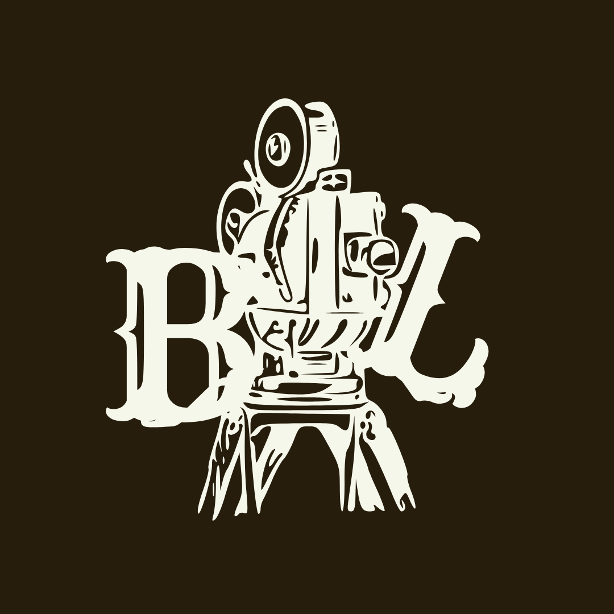

I am a filmmaker and visual storyteller. This website is a space to explore my work in film, cinematography, and design. I hope that what I have created here inspires you to work with me!
View My WorkPsalm 23: 1-3 “The Lord is my shepherd; I shall not want. He makes me lie down in green pastures. He leads me beside still waters"